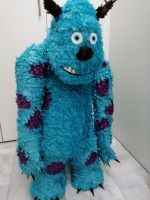
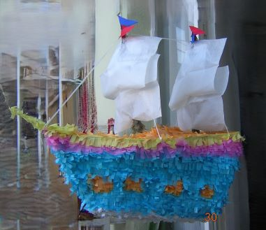
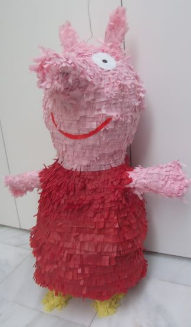
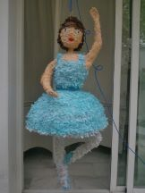
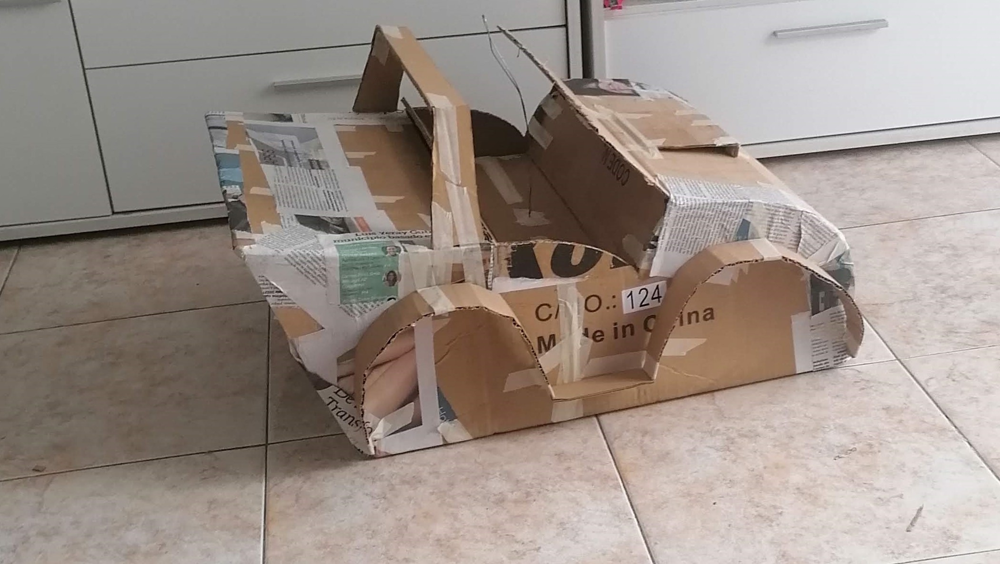
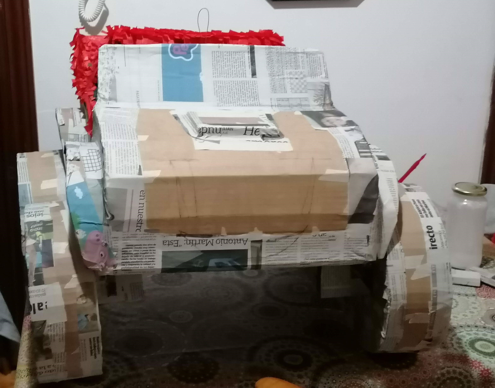
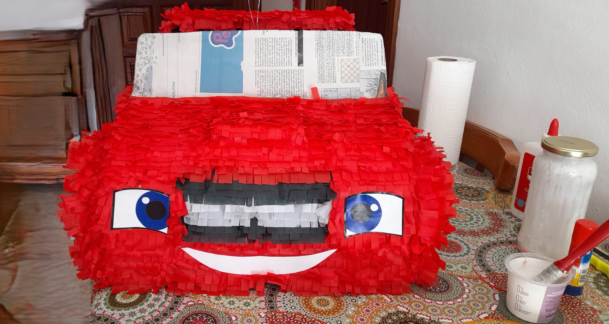
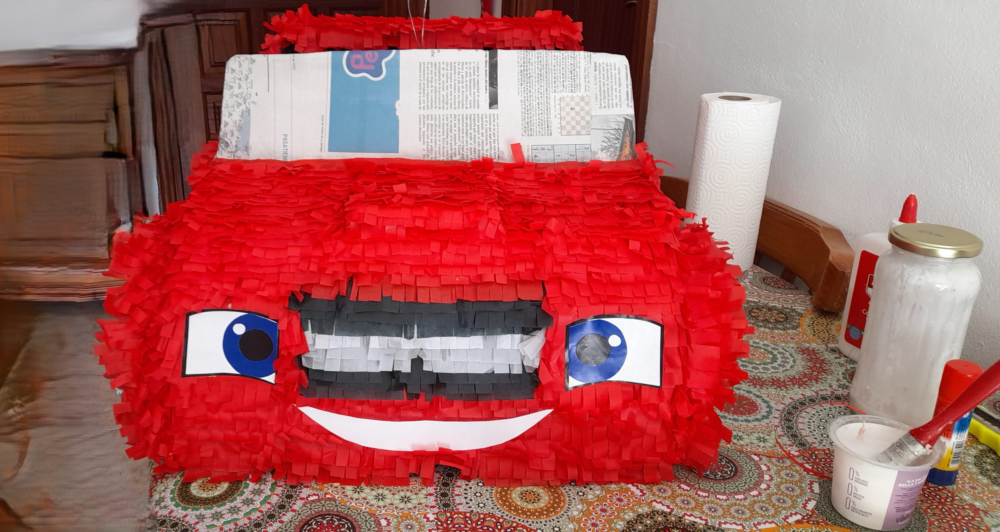
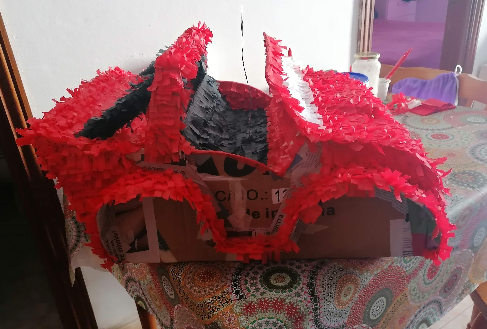
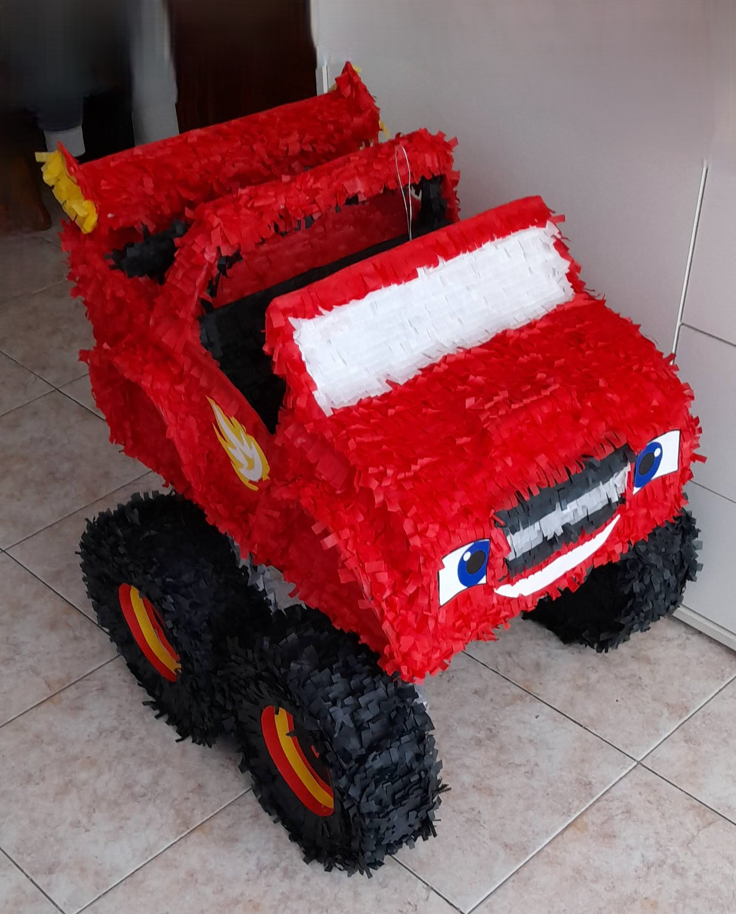

Historia de las Piñatas
Origen

Simbolismo

Conclusión

Nuestra Galería







×

Elaboración de las Piñatas

Procedimiento de elaboración de la Piñata
1. Preparamos la estructura con cartones, alambres y papel de periódicos.
- 

2. Después de preparada la estructura se procede a forrar con cola y periódicos.
- 

3. Una vez que se seca bien, empieza el proceso de forrar con papeles de colores, según el diseño.
 

4. Se visualiza el diseño, y se agregan los detalles.
- 

5. Se montan todas las partes para darle la forma final a la piñata.
- 

6. Proceso terminado se visualiza la Piñata por todos los ángulos para observar los detalles.